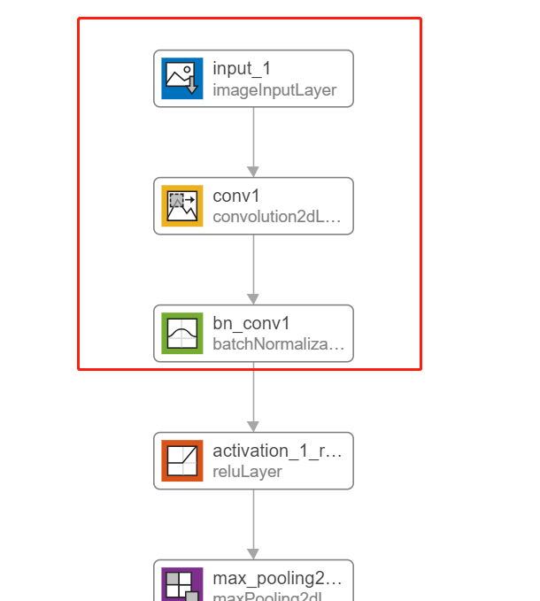

Why Are the Features Obtained by "Predict" and "Forward" Function Very Different?
Posted by TheMatrix on
2020-07-11
According to official instructions, “forward” is used for inference during the network training phase, and “predict” is used for inference during the network prediction phase.But there are a large number of networks used by the batchnorm layer,the features of forward and predict are very different.
For convenience, only observe the output features of the first convolution layer and bathhorm layer of resnet50,We first take the resnet50 network provided by matlab as an example to illustrate, convert to dlnetwork and compare.
1 2 3 4 5 6 7
net50 = resnet50; inputsize = [224,224]; img = imresize(imread('peppers.png'),inputsize); inputImg = dlarray(im2single(img),'SSCB'); lg = layerGraph(net50); newlg = removeLayers(lg,'ClassificationLayer_fc1000'); dlnet = dlnetwork(newlg); % take long time ???

network
simple case:
We extract the feature named “fc1000_softmax” layer，big different features between forward_f and predict_f ?
There is data output, indicating different, but the data looks the same, why?
Than compare the difference between forward and predict
1 2 3 4 5 6
predict_features = cell(2,1); [predict_features{:}]= predict(dlnet,inputImg,'Outputs',{'conv1','bn_conv1'}); if ~all(abs(forward_features{1}-predict_features{1})<Epsilon,"all") % compare conv features forward_features{1}(1:10,1:10,1) predict_features{1}(1:10,1:10,1) end
No result output, indicating that the convolution operation is consistent in forward and predict results.
1 2 3 4
if ~all(abs(forward_features{2}-predict_features{2})<Epsilon,"all") % compare batchnorm features forward_features{2}(1:10,1:10,1) predict_features{2}(1:10,1:10,1) end
The problem is coming, the values of predict and forward are obviously different. So I want to test why predict is very different. Below I use batchnorm() function to execute the result of the last convolution, without entering mean and variance.
From the output results, it is consistent with forward, why is it not the result of predict? Excuse me, what happened?(it is actually “forward()” mode)
Further testing
batchnorm() is internally calculated as ,the normalized activation is calculated using the following formula:
where $x_i$ is the input activation, $\mu_c$ (mu) and ${\sigma_c }^2$ (sigmaSq) are the per-channel mean and variance, respectively, and $\varepsilon$ is a small constant.
The normalized activation is offset and scaled according to the following formula:
1
y_i =\gamma \overset{\wedge }{x_i } +\beta
The offset $\beta$ and scale factor $\gamma$ are specified with the offset and scaleFactor arguments.
1 2 3 4 5 6 7 8 9 10 11 12 13 14 15 16
xi = forward_features{1};% 112×112×64×1 mu_global = dlnet.State.Value{1}; % 1*1*64 "predict()" use var_global = dlnet.State.Value{2}; % 1*1*64 "predict()" use mu_local = mean(forward_features{1},[1,2]);% 1*1*64*1 per-channel mean, "forward()" use var_local = var(forward_features{1},0,[1,2]);% 1*1*64*1 per-channel variance,"forward()" use
predict_mode = 0; % if the network is prediction phase if predict_mode norm_xi = (xi-mu_global)./sqrt(var_global+Epsilon);% 112×112×64×1, "predict()" use else norm_xi = (xi-mu_local)./sqrt(var_local+Epsilon);% 112×112×64×1,"forward()" use end
The results are excellent, verifying the correctness of the above results. When predict_mode=1, *cal_predict_y *is the same as predict_features(2); when predict_mode=0, cal_predict_y is the same as forward_features(2).
Calculate state quantity by formula
Let’s look at a formula that is calculated and updated manually according to the formula:
1
s_n ={\phi s}_x +\left(1-\phi \right)s_{n-1}
where $s_n$ is the statistic computed over several mini-batches, $s_x$ is the per-channel statistic of the current mini-batch, and $\phi$ is the decay value for the statistic.
Use this syntax to iteratively update the mean and variance statistics over several mini-batches of data during training. Use the final value of the mean and variance computed over all training mini-batches to normalize data for prediction and classification.
1 2 3 4 5 6 7 8 9
decay = 0.1; update_mu = decay*squeeze(mu_local)+... (1-decay)*squeeze(bnlayer.TrainedMean); update_sigmasq = extractdata(decay*squeeze(var_local)+... (1-decay)*squeeze(bnlayer.TrainedVariance)); if ~all(abs(mu-update_mu)<Epsilon,"all") mu(1:10) update_mu(1:10) end
ans = 10x1 single column vector -3.6372 -1.9135 -6.9729 1.4310 0.6519 6.1771 -9.1573 7.0686 -17.5036 0.3366
ans = 10x1 single dlarray -6.7745 -3.0580 -12.7130 2.2173 1.1940 12.9555 -16.8975 12.7977 -33.9066 0.6955
There is data output, Shows that the results are significantly different, update_mu is not updated to the “dlnet.state” state,So if we use “forward()” for propagation in the future, remember to assign the returned state to dlnet.state in order to keep the state updated.
conclusion:
forward() stage, batchnorm() uses the parameters of the per channel mean and variance of the current sample set, and then uses the weighted cumulative form to calculate the global mean and variance.
predict() stage, batchnorm() uses the mean and variance of the entire state of dlnet.state for network propagation.